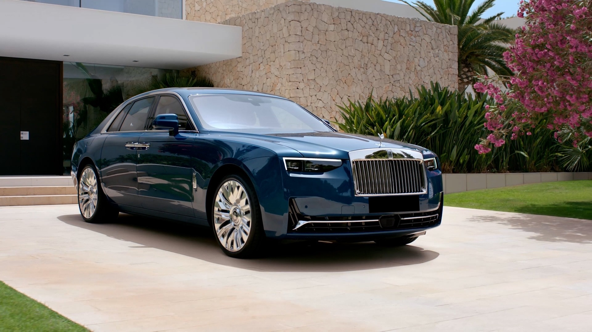

In the background
Dark suit, doors opened, umbrella ready. Trained for executive work, screened, and briefed on the day by name. The rest of the fleet is there for everyone else.

A Mercedes-Benz S-Class or BMW 7 Series, or on request a Rolls-Royce Ghost or Bentley Flying Spur, with a chauffeur for the day itself.
The Rolls-Royce and the Bentley are arranged on request, so the date is best given as soon as it is fixed.
One car, one chauffeur, and a timetable that bends when the day does.
The chauffeur learns the order of the day beforehand, so nobody has to explain it on the steps. The car is at the door before it is needed, and arrives at each place on the minute rather than roughly.
The car waits at the door, or holds nearby and comes back when called, whichever suits the venue.
Family and guests can travel too: a V-Class for up to seven, a Sprinter for eight, or a mini coach for up to nineteen between ceremony and dinner.
The Ghost and the Bentley are arranged with notice. Tell us the date early and the rest can be settled closer to the day.
A Mercedes-Benz S-Class or BMW 7 Series, prepared the evening before and quietly correct at any door.
For the arrival that everyone remembers. Arranged with notice.
A little less ceremony, the same presence at the door.
If the day calls for a car already in the family, a chauffeur drives it and returns it as it left.
Kept together between the places of the day, on the same timetable as the couple.
Taken to the airport for the first flight of the trip, met and seen off properly. More on Schiphol.
At the door before it is needed.
Dark suit, doors opened, umbrella ready. Trained for executive work, screened, and briefed on the day by name. The rest of the fleet is there for everyone else.
One proposal sets out the car, the chauffeur, the timings of the day and the cost. Nothing is added afterwards without your agreement.
A Mercedes-Benz S-Class or BMW 7 Series from the fleet, or a Rolls-Royce Ghost or Bentley Flying Spur arranged on request, all with a chauffeur. Your own car can be driven too.
Yes. The car stays at the door or close by, and is ready when the ceremony ends.
Yes. A V-Class, a Sprinter or a mini coach for up to nineteen moves guests between the places of the day.
Yes. Ribbons and flowers on the car can be arranged; tell us the colours and the style when you enquire.
The minimum is discussed when you enquire, and depends on the car and the shape of the day.
As soon as the date is fixed. The Ghost and the Bentley are arranged with notice, and the details of the day can follow later.
Tell us the day. We will write the rest.